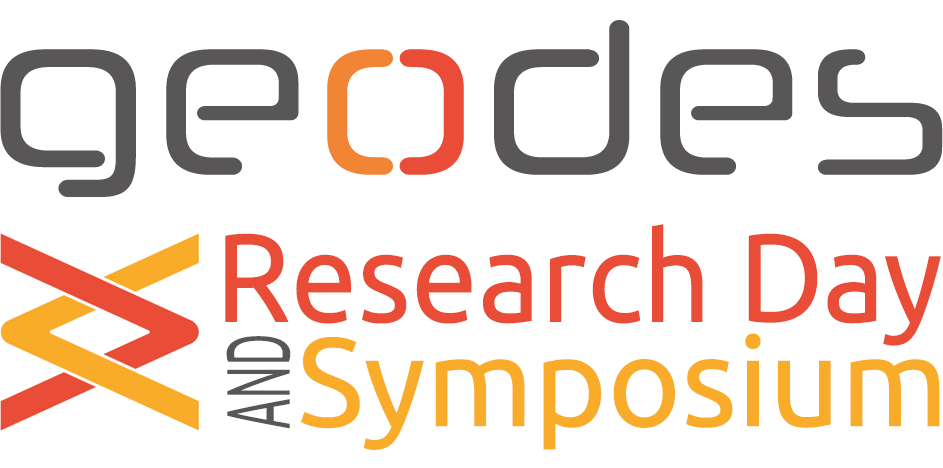

Welcome to the 2022 edition of the GEODES Research Day and Symposium.
This event aims to bring together current members of GEODES to exchange research results, ideas, and plans.
The event provides graduate students with an excellent opportunity to hone their presentation skills and to get ready for larger venues (workshops, conferences). This is especially important as life gets back to normal after COVID-19, and scientific events will switch to in-person formats (at least partially).
The series of presentations allows for a hands-on assessment of the balance between the focus areas of the group. Professors and postdocs might want to leverage this opportunity for roadmapping exercises and setting tangible goals for the forthcoming year.
Finally, this event provides permanent members and visiting scholars a structured way of learning about each other's focus areas, research directions and latest results, thereby fostering future collaborations.
Program
The event consists of two distinct parts: the Research Day, and the Symposium.
First, during the Research Day, we will entertain a range of presentations and demos. We kick off at 8h45, and conclude at around 17h.
Then, around 18h, we proceed with the Symposium, an informal get-together
Schedule
| Time | Presenter | Topic | ||
|---|---|---|---|---|
| 08:45 | Eugene SYRIANI | Welcome and Overview of our research in modeling and simulation [PDF] | ||
| Design and Uncertainty | ||||
| 09:00 | Michalis FAMELIS | Towards understanding and managing design-time uncertainty | 5' + 5' | |
| 09:15 | Mouna DHAOUADI | Design rationale extraction and management | 5' + 5' | |
| Model-driven Engineering | ||||
| 09:30 | MohammadAmin ZAHERI | Catch me if you can: towards consistency management in low-code platforms | 10' + 5' | |
| 09:50 | Istvan DAVID | Real-time collaborative modeling by conflict-free replicated data types [PDF] | 10' + 5' | |
| 10:10 | Coffee break | |||
| 10:20 | Louis-Edouard LAFONTANT | Gentleman as a CMS editor: a web app integration [PDF] | 10' + 5' | |
| 10:40 | Aurelien DUCOIN | Generation of graphical projectional editors | 10' + 5' | |
| 11:00 | Manouchehr ZADAHMAD | Domain-specific version control systems [PDF] | 10' + 5' | |
| 11:20 | Zahra VARAMINYBAHNEMIRY | Social diversity for ATL repair | 10' + 5' | |
| 11:40 | Lunch Break | |||
| AI for SE 1 | ||||
| 12:40 | Bentley James OAKES | Addressing domain-specific problems with machine learning solutions | 10' + 5' | |
| 13:00 | Lola BURGUEÑO | Facilitating the definition and improving the quality of domain models using an NLP-based assistant [PDF] | 10' + 5' | |
| 13:20 | Song YANG | Getting UML class diagrams from English, Automatically | 10' + 5' | |
| 13:40 | Martin WEYSSOW | Better modeling the programming world with code concept-graphs multimodal learning [PDF] | 5' + 5' | |
| 13:55 | Coffee break | |||
| AI for SE 2 | ||||
| 14:00 | Jessie GALASSO-CARBONNEL | Code sophistication | 10' + 5' | |
| 14:20 | Oussama BEN SGHAIER | On the use of pre-trained language models and ensemble learning to assist developers during code review | 10' + 5' | |
| 14:40 | Lucas MAES | Software Distillation | 10' + 5' | |
| 15:00 | Aton KAMANDA | Solving hierarchical tasks with Large Language Models Trained on Code | 10' + 5' | |
| 15:20 | Coffee break | |||
| 15:30 | Discussion begins | |||
| 17:00 | Discussion ends | |||
| 18:00 | Social event | |||